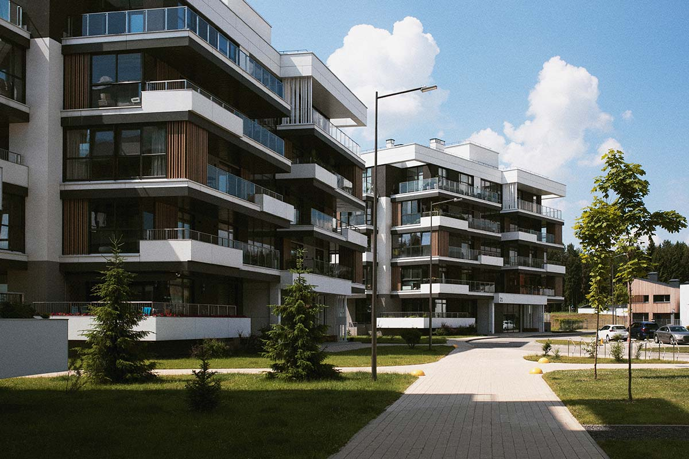

ترميم وتجديد حمامات ومطابخ بالرياض يبدأ من التمديدات وينتهي بالتشطيب | 0502833163
تحتاج الحمامات والمطابخ إلى عناية مختلفة عن بقية غرف المنزل؛ لأنها تجمع بين تمديدات المياه والصرف والكهرباء والعزل والتشطيبات، ولذلك يبدأ ترميم وتجديد حمامات ومطابخ بالرياض بفحص العناصر الموجودة وتحديد الأجزاء التي يمكن الاحتفاظ بها، ثم ترتيب التكسير والمعالجة والتركيب حتى تصبح المساحتان أكثر أمانًا وسهولة في الاستخدام.

ترميم وتجديد حمامات ومطابخ بالرياض يبدأ من التمديدات وينتهي بالتشطيب
لا يقتصر ترميم وتجديد حمامات ومطابخ بالرياض على تغيير البلاط أو تركيب وحدات جديدة؛ لأن أي مشكلة مخفية في المواسير أو العزل قد تتسبب في تكسير التشطيبات بعد الانتهاء منها، ولهذا تبدأ الأعمال بمراجعة أماكن المياه والصرف والكهرباء، ثم تُحدد التعديلات المطلوبة وفق التصميم الجديد.
ويختلف نطاق التجديد من منزل إلى آخر، فقد يحتاج الحمام إلى إصلاح تسرب وتغيير أجزاء محدودة، بينما يحتاج حمام آخر إلى تكسير كامل وتجديد السباكة والعزل والبلاط، كما قد يحتاج المطبخ إلى تحديث نقاط الأجهزة والحوض والوحدات، مع الإبقاء على الأرضية أو بعض الخزائن إذا كانت حالتها جيدة.
ويجمع ترميم حمامات ومطابخ بالرياض بين الجانب الفني والتصميم العملي، حيث تُعالج أسباب التلف أولًا، ثم تُوزع الأدوات والوحدات بصورة تسهل الحركة والتنظيف، وبعد ذلك تُنفذ التشطيبات التي تتناسب مع الرطوبة والاستخدام المتكرر.
متى تحتاج الحمامات والمطابخ إلى التجديد؟
تظهر بعض العلامات التي تشير إلى أن الصيانة البسيطة لن تكون كافية، وقد تساعد ملاحظتها مبكرًا على تقليل حجم التلف، وفيما يلي نوضح لكم الحالات التي تستدعي فحص الحمام أو المطبخ:
1. تكرار تسرب المياه
يشير تكرار التسرب إلى وجود مشكلة في المواسير أو الوصلات أو العزل، وقد تظهر آثاره أسفل الحوض أو خلف الخزائن أو في سقف الطابق السفلي، ولذلك يجب تحديد مصدر المياه قبل إصلاح الدهانات والبلاط.
2. بطء تصريف المياه
قد ينتج بطء التصريف عن انسداد محدود، إلا أن تكراره بعد التنظيف قد يدل على ضعف ميل المواسير أو تلف جزء منها، كما قد يصاحبه خروج روائح أو ارتداد المياه.
3. ظهور رطوبة على الجدران المجاورة
تنتقل الرطوبة من الحمام أو المطبخ إلى الغرف المحيطة عندما تتسرب المياه من المواسير أو الأرضية، وقد تتسبب في تقشر الدهان وظهور العفن وتلف الأخشاب، مما يجعل المعالجة السريعة ضرورية.
4. تحرك البلاط أو صدور صوت أجوف
يدل الصوت الأجوف على وجود فراغ أسفل البلاط أو ضعف التصاقه بالقاعدة، كما قد يرتبط تحرك بلاط الأرضية بوصول المياه إلى الطبقة الموجودة تحته، ولذلك يجب فحص المنطقة قبل سقوط البلاط أو تشققه.
5. تآكل فواصل السيراميك
تسمح الفواصل المتشققة أو الناقصة بوصول المياه إلى الطبقات الخلفية، كما تصبح بيئة مناسبة لتراكم الأوساخ، وقد تكفي إعادة ملئها إذا كان البلاط والقاعدة في حالة جيدة.
6. قدم مواسير المياه والصرف
تحتاج المواسير القديمة إلى تقييم قبل تركيب بلاط أو وحدات جديدة، لأن استبدالها بعد انتهاء التشطيب يؤدي إلى إعادة التكسير، كما قد تكون بعض الوصلات ضعيفة رغم عدم ظهور تسرب واضح.
7. ضعف توزيع الكهرباء
تحتاج المطابخ الحديثة إلى نقاط متعددة للأجهزة، كما تتطلب الحمامات توزيعًا آمنًا للإضاءة والشفاطات، ولذلك يجب مراجعة التوصيلات قبل تغطية الجدران بالبلاط.
8. عدم ملاءمة توزيع الوحدات
قد يعوق مكان الحوض أو الثلاجة أو الأدوات الصحية الحركة، كما قد تقل مساحات التخزين نتيجة توزيع غير عملي، وهنا يساعد ترميم وتجديد حمامات ومطابخ بالرياض على إعادة تنظيم المساحة بما يناسب الاستخدام اليومي.
الفرق بين التجديد الجزئي والتجديد الشامل
يُحدد نطاق المشروع وفق حالة التمديدات والعزل والبلاط والنتيجة المطلوبة، وفيما يلي نوضح لكم الفرق بين مستويات التجديد:
1. التجديد الشكلي
يشمل تغيير الدهانات والإكسسوارات والإضاءة والمقابض وبعض القطع الظاهرة، ويكون مناسبًا عندما تكون السباكة والعزل والبلاط في حالة جيدة.
2. تغيير البلاط والأدوات
يمكن استبدال بلاط الجدران أو الأرضية وتركيب أدوات صحية أو حوض جديد، إلا أن حالة القاعدة والتمديدات يجب أن تُفحص أولًا حتى لا تُغطى مشكلات تحتاج إلى معالجة.
3. تحديث السباكة والعزل
يتضمن المشروع تجديد سباكة الحمام أو المطبخ ومعالجة الأرضيات والجدران، ثم تنفيذ العزل واختباره قبل إعادة تركيب التشطيبات.
4. إعادة توزيع النقاط
يشمل نقل الحوض أو الأدوات الصحية أو الأجهزة، كما يتطلب تعديل مسارات المياه والصرف والكهرباء، ولذلك يحتاج إلى تصميم واضح قبل التكسير.
5. التجديد الكامل
يجمع بين التكسير والسباكة والعزل والكهرباء والبلاط والوحدات والتشطيبات، ويكون مناسبًا عندما تتداخل المشكلات أو تصبح العناصر القديمة غير ملائمة للاستخدام الجديد.
فحص الحمام والمطبخ قبل بدء التكسير
يمنع الفحص إزالة أجزاء سليمة أو اكتشاف تعارضات بعد بدء التنفيذ، كما يساعد على تحديد نطاق ترميم حمامات ومطابخ بالرياض بدقة، وفيما يلي نوضح لكم عناصر المعاينة:
1. تحديد مسارات المواسير
تُراجع أماكن تغذية المياه وخطوط الصرف، كما تُحدد النقاط التي سيجري الإبقاء عليها أو نقلها، مما يقلل احتمال إتلاف المواسير أثناء التكسير.
2. اختبار ضغط المياه
يكشف الاختبار وجود ضعف أو تسرب في الوصلات، كما يساعد على التأكد من كفاءة تمديدات المياه قبل تغطيتها بالتلييس والبلاط الجديد.
3. فحص تصريف المياه
تُشغل نقاط الصرف للتأكد من سرعتها وعدم ارتداد المياه، كما تُراجع الروائح والمناسيب والميول حتى يمكن تعديلها ضمن المشروع.
4. البحث عن آثار الرطوبة
تُفحص الجدران والأرضيات وأسفل الوحدات وحول المواسير، كما تُراجع الغرف المجاورة والسقف الموجود أسفل الحمام أو المطبخ لاكتشاف أي أثر لتسرب قديم.
5. مراجعة البلاط والقاعدة
يُفحص ثبات البلاط والفواصل، كما تُحدد المناطق المجوفة أو المتشققة، ثم يُقرر ما إذا كان تغيير بلاط الحمام ضروريًا أم يمكن الاحتفاظ ببعض الأجزاء.
6. مراجعة الكهرباء والتهوية
تُحدد احتياجات الأجهزة والإضاءة والشفاطات، كما تُراجع أماكن المقابس بالنسبة إلى مصادر المياه، ويُراعى تنفيذ التعديلات قبل تركيب البلاط.
7. قياس المساحة
تُسجل أبعاد الجدران وفتحات الأبواب والنوافذ، ثم تُحدد أماكن الوحدات والأجهزة والأدوات، مما يساعد على ضبط كميات المواد وتقليل القصات غير المنتظمة.
خطوات ترميم حمامات ومطابخ بالرياض
تحتاج أعمال ترميم حمامات ومطابخ بالرياض إلى ترتيب يضمن الانتهاء من التمديدات والعزل قبل التشطيبات، وفيما يلي نوضح لكم مراحل التنفيذ:
1. اعتماد التصميم والتوزيع
تُحدد أماكن الأدوات الصحية وحوض المطبخ والأجهزة والوحدات، كما تُراجع مسافات الحركة وفتحات الأبواب قبل نقل نقاط المياه أو الكهرباء.
2. فصل المياه والكهرباء
تُغلق مصادر المياه وتُفصل الدوائر المرتبطة بمنطقة العمل، مما يساعد على تنفيذ التكسير بأمان ويمنع التسرب أو تلف التوصيلات.
3. فك الأدوات والوحدات
تُفك الأدوات الصحية والخزائن والأجهزة والإكسسوارات، كما تُحفظ القطع التي يمكن إعادة استخدامها بعيدًا عن الغبار والصدمات.
4. إزالة التشطيبات التالفة
يتولى مقاول تكسير حمامات إزالة البلاط والأجزاء المتضررة بصورة تدريجية، كما يحدد حدود العمل حتى لا يتأثر الجدار أو الأرضية خارج المساحة المطلوب تجديدها.
5. تجديد السباكة والصرف
تُغير المواسير أو الوصلات المطلوبة، وتُعدل أماكن الأدوات والأحواض، ثم تُختبر التمديدات قبل إغلاق المسارات، مما يمنع إعادة التكسير بعد تركيب البلاط.
6. تعديل الكهرباء
تُجهز نقاط الأجهزة والشفاطات والإضاءة، كما تُحدد المقابس والمفاتيح في أماكن آمنة وعملية، ثم تُختبر قبل استكمال تشطيب الجدران.
7. تجهيز الجدران والأرضيات
تُزال الأجزاء الضعيفة وتُغلق مسارات التمديدات، ثم تُسوّى الأسطح وتُعالج الشقوق والزوايا قبل تنفيذ طبقة العزل.
8. تنفيذ العزل واختباره
يُطبق العزل على السطح المجهز، كما تُعالج الزوايا ومخارج المواسير بعناية، ثم يُختبر العزل قبل تركيب البلاط حتى تظهر أي ملاحظة في الوقت المناسب.
9. تركيب البلاط
تُضبط مناسيب الأرضية والميول نحو المصارف، كما يُوزع بلاط الجدران بصورة تقلل القصات غير المتناسقة، ثم تُملأ الفواصل بعد ثبات التركيب.
10. تركيب الأدوات والوحدات
تُثبت الأدوات الصحية ووحدات المطبخ والأسطح والأحواض، كما تُغلق الحواف المعرضة للمياه بمواد مناسبة تمنع وصول الرطوبة إلى الخزائن والجدران.
11. الاختبار والتنظيف
تُشغل المياه والصرف والكهرباء، ثم تُراجع الميول والفواصل والوصلات، ويُنظف الموقع قبل تسليم الحمام والمطبخ للاستخدام.
مقاول تكسير حمامات يحافظ على التمديدات والأجزاء السليمة
يبدأ دور مقاول تكسير حمامات بتحديد الأجزاء المطلوب إزالتها والمناطق التي يجب حمايتها، فلا يُنفذ التكسير بطريقة عشوائية قد تتسبب في ثقب ماسورة أو كسر بلاط خارج نطاق العمل.
كما يراجع مقاول تكسير حمامات أماكن الأدوات والمواسير قبل استخدام المعدات، ويبدأ بفك القطع القابلة لإعادة الاستخدام، ثم يزيل البلاط والمونة تدريجيًا مع رفع المخلفات بصورة منتظمة. وتتطلب أعمال التكسير مجموعة من الخطوات المنظمة، وفيما يلي نوضح لكم أهمها:
1. تحديد نطاق التكسير
تُحدد الأرضيات والجدران والوحدات المطلوب إزالتها، كما تُرسم حدود واضحة تفصل منطقة العمل عن الأجزاء التي سيجري الاحتفاظ بها.
2. فصل الخدمات
تُغلق المياه وتُفصل الكهرباء عن المنطقة، كما تُراجع نقاط الصرف قبل بدء التكسير لتقليل احتمالات التلف والحوادث.
3. حماية الأبواب والممرات
تُغطى الأرضيات والمداخل التي تُستخدم لنقل المخلفات، كما تُحمى الأبواب والخزائن القريبة من الصدمات والغبار.
4. فك الأدوات بعناية
تُفك الأحواض والخلاطات والمراحيض والإكسسوارات قبل تكسير البلاط، كما تُحفظ القطع السليمة إذا كان صاحب المنزل يرغب في إعادة تركيبها.
5. إزالة البلاط تدريجيًا
يبدأ مقاول تكسير حمامات من منطقة مناسبة، ثم يزيل البلاط والمونة من دون الضغط الزائد على الجدار أو الأرضية، مع الانتباه إلى مسارات المواسير والأسلاك.
6. تنظيف القاعدة
تُزال بقايا المواد الضعيفة حتى تظهر حالة السطح الحقيقية، ثم تُفحص الشقوق والرطوبة قبل بدء السباكة والعزل.
7. نقل المخلفات
تُجمع الأنقاض في عبوات مناسبة وتُنقل على مراحل، مما يحافظ على مساحة العمل ويقلل انتشار الغبار داخل المنزل.
تجديد سباكة الحمام قبل تركيب التشطيبات
يُعد تجديد سباكة الحمام من أهم مراحل المشروع؛ لأن المواسير والوصلات ستختفي خلف الجدران والبلاط، ولذلك يجب التأكد من سلامتها قبل تنفيذ التشطيبات الجديدة.
وقد يقتصر تجديد سباكة الحمام على استبدال وصلة تالفة أو تعديل نقطة محددة، بينما تحتاج الحمامات القديمة إلى تغيير أوسع في خطوط التغذية والصرف، خاصة عند تكرار التسرب أو نقل أماكن الأدوات الصحية. وتشمل أعمال تجديد سباكة الحمام ما يلي:
1. فحص مواسير التغذية
تُراجع حالة المواسير والوصلات والمحابس، كما تُحدد الأجزاء القابلة للاستخدام والأجزاء التي ينبغي تغييرها بسبب القدم أو التسرب.
2. مراجعة خطوط الصرف
تُفحص أقطار المواسير واتجاهها وميولها، كما تُعالج الوصلات الضعيفة التي قد تؤدي إلى بطء التصريف أو تسرب المياه أو خروج الروائح.
3. تعديل أماكن الأدوات الصحية
تُحدد أماكن الحوض والمرحاض ومنطقة الاستحمام وفق التصميم، ثم تُنقل نقاط المياه والصرف قبل إغلاق الأرضية والجدران.
4. ضبط ارتفاعات الخلاطات
تُراجع الارتفاعات بما يتناسب مع الأحواض والأدوات الجديدة، كما تُراعى سماكة التلييس والبلاط حتى تظهر المخارج في المستوى الصحيح بعد التشطيب.
5. تركيب محابس تحكم
تساعد المحابس على فصل كل نقطة عند الصيانة، كما تقلل الحاجة إلى إغلاق مياه المنزل بالكامل عند حدوث عطل محدود.
6. اختبار الضغط والوصلات
يكتمل تجديد سباكة الحمام بعد اختبار التمديدات والتأكد من عدم وجود تسرب، ثم تُغلق المسارات وتبدأ أعمال العزل والتبليط.
7. توثيق مسارات المواسير
تُلتقط صور أو تُسجل أبعاد المسارات قبل تغطيتها، مما يساعد على تجنبها عند تركيب الإكسسوارات أو إجراء صيانة مستقبلية.
كيف نمنع روائح الصرف بعد تجديد الحمام؟
ترتبط روائح الصرف بسلامة التوصيلات والميول والمصارف، كما قد تظهر نتيجة جفاف الحاجز المائي داخل بعض نقاط الصرف أو وجود فراغ حول الوصلات، ولذلك يجب فحص المسار كاملًا قبل تركيب الأرضية.
ويشمل العلاج التأكد من إحكام الوصلات، وتنظيف الخطوط، وضبط ميل المواسير، واختيار مصرف أرضي مناسب، كما ينبغي عدم ترك فتحات مكشوفة أو توصيلات مؤقتة خلف الأدوات الصحية.
ويؤدي تجديد سباكة الحمام بصورة صحيحة إلى تحسين التصريف وتقليل الروائح، كما يجب تشغيل النقاط ومراقبتها قبل إغلاق الأرضية حتى يمكن تعديل أي مشكلة بسهولة.
عزل أرضيات الحمامات قبل تركيب البلاط
يحمي العزل السقف والجدران المجاورة من تسرب المياه، كما يقلل تلف التلييس والدهانات، ولذلك يمثل مرحلة أساسية في ترميم وتجديد حمامات ومطابخ بالرياض، وفيما يلي نوضح لكم خطوات تنفيذه:
1. تجهيز السطح
تُزال الأتربة وبقايا المونة والأجزاء غير المتماسكة، ثم تُسوّى الأرضية وتُترك حتى تصبح مناسبة لاستقبال مادة العزل.
2. معالجة الشقوق والزوايا
تُغلق الشقوق وتُعالج الزوايا ومناطق التقاء الأرضية بالجدران، كما تُراجع الفراغات المحيطة بمواسير الصرف والتغذية.
3. تطبيق طبقات العزل
تُنفذ طبقات العزل وفق تعليمات المادة، مع الاهتمام بتوزيعها بصورة متجانسة وعدم ترك فراغات أو مناطق ضعيفة.
4. رفع العزل على الجدران
يمتد العزل إلى ارتفاع مناسب عند الجدران، كما يزداد الاهتمام بمنطقة الاستحمام والأجزاء التي تتعرض للمياه بصورة مباشرة.
5. اختبار العزل
يُجرى الاختبار قبل تغطية الطبقة بالبلاط، وتُراقب المنطقة للتأكد من عدم تسرب المياه إلى السقف أو الجدران المجاورة.
6. حماية الطبقة
تُحمى طبقة العزل من الأدوات الحادة وحركة العمال، كما تُنفذ الطبقة التي تسبق البلاط من دون ثقب العزل أو إتلافه.
7. ضبط الميول
تُضبط ميول الأرضية باتجاه المصرف حتى لا تتجمع المياه بعد الانتهاء، كما تُراجع مناسيب الأبواب ومنطقة الاستحمام.
تغيير بلاط الحمام بطريقة تمنع تجمع المياه
يمنح تغيير بلاط الحمام المساحة مظهرًا جديدًا، إلا أن نجاحه يعتمد على حالة القاعدة وضبط الميول واختيار خامة تناسب الأرضيات الرطبة، وليس على اللون والتصميم فقط.
وقد يصبح تغيير بلاط الحمام ضروريًا عند تحرك القطع أو تشققها أو وصول المياه أسفلها، كما يُنفذ عند تعديل السباكة والعزل؛ لأن الوصول إلى التمديدات يتطلب إزالة جزء من الأرضية أو الجدران. ويشمل تغيير بلاط الحمام الخطوات التالية:
1. اختيار البلاط المناسب
يُفضل اختيار بلاط أرضية يتحمل المياه ويوفر درجة مناسبة من مقاومة الانزلاق، بينما يمكن اختيار بلاط الجدران وفق التصميم وسهولة التنظيف.
2. حساب المقاسات والقصات
يُخطط توزيع البلاط قبل التركيب، كما تُحدد أماكن القصات حول الزوايا والمصارف والأدوات حتى يظهر التصميم بصورة منتظمة.
3. تجهيز القاعدة
تُزال المواد الضعيفة وتُسوّى الأرضية، كما تُراجع طبقة العزل والميول قبل وضع مادة تثبيت البلاط.
4. ضبط الميل نحو الصرف
تُركب القطع مع الحفاظ على ميل يسمح بوصول المياه إلى المصرف، ويجب تجنب المناطق المنخفضة التي تؤدي إلى تجمع الماء.
5. استخدام مادة تثبيت مناسبة
تُختار المادة وفق نوع البلاط والسطح، كما تُوزع بطريقة تمنع تكوّن فراغات كبيرة أسفل القطع.
6. توحيد الفواصل
تساعد الفواصل المنتظمة على تحسين المظهر واستيعاب الاختلافات البسيطة، كما تسهل ملء المساحات بين البلاط بصورة كاملة.
7. ملء الفواصل
تُستخدم مادة تناسب الأماكن الرطبة، ثم تُنظف الزيادة قبل الجفاف، كما تُراجع الحواف المحيطة بالمصرف والأدوات.
8. فحص البلاط
يكتمل تغيير بلاط الحمام بعد مراجعة الثبات والمستوى والميول، ثم يُترك البلاط حتى يتماسك قبل تشغيل المياه أو تركيب الأدوات.
هل يمكن تركيب البلاط الجديد فوق البلاط القديم؟
يمكن تركيب البلاط فوق البلاط القديم إذا كانت القطع الموجودة ثابتة ومستوية، ولم توجد مشكلات في العزل أو المواسير، كما يجب التأكد من أن ارتفاع الأرضية الجديد لن يعيق فتح الأبواب أو يرفع منسوب الحمام عن الممر.
ويصبح التكسير ضروريًا عندما يكون البلاط متحركًا أو متشققًا، أو عندما توجد رطوبة تحته، كما يحتاج تغيير بلاط الحمام إلى إزالة التشطيب القديم إذا كان المشروع يشمل تجديد السباكة والعزل.
ويحدد الفحص الخيار المناسب، لأن اختصار مرحلة التكسير قد يوفر الوقت في بعض الحالات، إلا أنه قد يخفي مشكلة تجعل البلاط الجديد ينفصل أو تتسرب المياه من أسفله.
عزل وتجديد مطابخ يحمي الوحدات والجدران
تتركز أعمال عزل وتجديد مطابخ حول الحوض وغسالة الصحون ومخارج المياه، كما تشمل معالجة الجدران والأرضيات قبل تركيب الخزائن التي قد تخفي التسرب لفترة طويلة.
ويبدأ عزل وتجديد مطابخ بفحص تمديدات المياه والصرف، ثم تحديد ما إذا كانت الأرضية أو المنطقة أسفل الحوض تحتاج إلى عزل أو إصلاح، كما تُراجع الحواف المحيطة بالأسطح حتى لا تصل المياه إلى جسم الوحدات. وتتضمن أعمال عزل وتجديد مطابخ الخطوات التالية:
1. فحص تمديدات الحوض
تُراجع مواسير التغذية والصرف والوصلات، كما تُحدد أماكن المحابس حتى يسهل الوصول إليها عند الصيانة.
2. تجهيز نقطة غسالة الصحون
تُحدد نقطة المياه والصرف والكهرباء وفق مكان الجهاز، كما يُراعى ترك مساحة تسمح بتركيبه وفكه من دون التأثير في الوحدات المجاورة.
3. معالجة الرطوبة
تُحدد مصادر الرطوبة حول الحوض والجدار والأرضية، ثم تُعالج المنطقة وتُترك حتى تجف قبل تركيب البلاط والخزائن.
4. حماية المساحة أسفل الوحدات
قد يشمل عزل وتجديد مطابخ معالجة الأرضية والحواف في المناطق المعرضة للتسرب، مما يقلل وصول المياه إلى الوحدات أو الغرف المجاورة.
5. اختيار تشطيبات سهلة التنظيف
تُختار أرضيات وجدران تتحمل الاستخدام اليومي وبخار الطهي، كما تساعد الأسطح قليلة المسام على تقليل امتصاص البقع.
6. عزل الحواف المحيطة بالحوض
تُغلق المسافة بين الحوض وسطح المطبخ، كما تُعالج التقاءات السطح بالجدار لمنع تسرب المياه إلى الخزائن أو خلفها.
7. اختبار المياه قبل تركيب الوحدات
يُستكمل عزل وتجديد مطابخ بعد تشغيل نقاط المياه والصرف ومراقبتها، ثم تُركب الخزائن والأجهزة بعد التأكد من عدم وجود تسرب.
كيف يُعاد توزيع المطبخ أثناء التجديد؟
يعتمد توزيع المطبخ على حركة الاستخدام وأماكن التمديدات والأجهزة، ولذلك ينبغي اعتماد التصميم قبل بدء التكسير، وفيما يلي نوضح لكم العناصر التي يجب مراعاتها:
1. تحديد مكان الحوض
يفضل اختيار مكان يسمح بسهولة توصيل المياه والصرف، كما ينبغي توفير مساحة كافية حول الحوض للتحضير والتنظيف.
2. توزيع الأجهزة
تُحدد أماكن الثلاجة والفرن وغسالة الصحون والشفاط، ثم تُجهز نقاط الكهرباء والتهوية وفق احتياجات كل جهاز.
3. تنظيم سطح العمل
يُراعى توفير مساحة تحضير بين الحوض ومنطقة الطهي، كما تُوزع الأجهزة الصغيرة من دون إشغال الممر أو تعطيل فتح الأدراج.
4. تحديد نقاط الكهرباء
تُجهز المقابس وفق مواقع الأجهزة، كما تُوزع نقاط إضافية فوق سطح العمل بطريقة بعيدة عن الحوض ومصادر المياه.
5. تحسين الإضاءة
تُجمع الإضاءة العامة مع إضاءة عملية فوق أسطح التحضير، كما يمكن إضافة إنارة أسفل الوحدات العلوية لتقليل الظلال.
6. استغلال مساحات التخزين
تُستخدم الزوايا والأدراج العميقة والوحدات الرأسية بصورة عملية، كما تُخصص أماكن للأدوات المستخدمة يوميًا بالقرب من منطقة العمل.
7. الحفاظ على مسار الحركة
تُراجع المسافة أمام الأدراج والأجهزة والأبواب، كما يُمنع تعارض فتح الثلاجة أو الفرن مع الممرات أو الوحدات المجاورة.
تجديد كهرباء الحمامات والمطابخ بأمان
تحتاج الكهرباء في المساحات الرطبة إلى تخطيط دقيق قبل تركيب البلاط، كما ينبغي تحديد الأجهزة والإضاءة والشفاطات حتى تُنفذ النقاط في أماكنها الصحيحة.
وتختلف احتياجات المطبخ بسبب تعدد الأجهزة، ولذلك تُراجع الأحمال والتوصيلات، كما تُفصل نقاط الأجهزة القوية وفق متطلباتها، ويُراعى إبعاد المقابس عن الحوض. وتشمل خطوات تجديد الكهرباء ما يلي:
1. مراجعة الأحمال
تُحدد قدرة الأجهزة التي ستُستخدم، ثم تُراجع الدوائر والتوصيلات حتى تتحمل التشغيل من دون تحميل زائد.
2. تحديد نقاط الأجهزة
تُجهز نقاط الثلاجة والفرن والشفاط وغسالة الصحون والسخان، كما تُراعى أماكنها النهائية قبل تركيب الخزائن والبلاط.
3. إبعاد المقابس عن المياه
تُختار أماكن عملية وآمنة للمقابس والمفاتيح، مع مراعاة عدم تعرضها لرذاذ المياه أو بخار كثيف.
4. تجهيز التهوية
تُحدد نقطة الشفاط ومسار الهواء، كما تُراجع فتحة التهوية حتى تساعد على تقليل الرطوبة والروائح داخل الحمام أو المطبخ.
5. توزيع الإضاءة
تُقسم الإضاءة إلى رئيسية وعملية، كما تُراعى مناطق المرآة والحوض وسطح تحضير الطعام حتى تقل الظلال وتتحسن الرؤية.
6. اختبار النقاط
تُختبر التوصيلات قبل إغلاق الجدران وتركيب البلاط، ثم تُراجع مرة أخرى بعد تركيب المفاتيح ووحدات الإضاءة.
اختيار تشطيبات مناسبة للحمامات والمطابخ
تتعرض التشطيبات للمياه والبخار والتنظيف المتكرر، ولذلك يجب الجمع بين المظهر وسهولة الاستخدام، وفيما يلي نوضح لكم أهم العناصر التي ينبغي مراعاتها:
1. أرضيات مقاومة للانزلاق
توفر الأرضية المناسبة ثباتًا أفضل عند البلل، كما يجب ألا تكون شديدة الخشونة بصورة تجعل تنظيفها صعبًا.
2. جدران سهلة التنظيف
يمكن استخدام البلاط أو الدهانات المناسبة للمناطق غير المعرضة للمياه المباشرة، مع اختيار أسطح تتحمل الرطوبة والبقع.
3. فواصل مقاومة للرطوبة
تقلل الفواصل الجيدة امتصاص المياه وتراكم الأوساخ، كما تساعد على حماية حواف البلاط والحفاظ على مظهره.
4. أسطح مطابخ عملية
ينبغي أن تتحمل الأسطح الاستخدام والتنظيف، كما يجب إغلاق فتحات الحوض والحواف بطريقة تمنع وصول المياه إلى الخزائن.
5. وحدات تتحمل الرطوبة
تُختار خامات مناسبة للمطابخ والحمامات، كما تُحمى الحواف والفتحات القريبة من مصادر المياه حتى لا تنتفخ أو تتقشر.
6. إكسسوارات مقاومة للصدأ
تتعرض المقابض والمفصلات والإكسسوارات للرطوبة والبخار، ولذلك تُختار خامات تحافظ على عملها ومظهرها مع الاستخدام المتكرر.
كيف تُحسب تكلفة ترميم وتجديد حمامات ومطابخ بالرياض؟
تختلف تكلفة ترميم وتجديد حمامات ومطابخ بالرياض حسب حالة التمديدات وحجم التكسير ونوع العزل والبلاط والوحدات، كما تؤثر التعديلات المطلوبة في أماكن المياه والكهرباء، وفيما يلي نوضح لكم أهم عوامل التسعير:
1. مساحة الحمام أو المطبخ
تحدد المساحة كمية البلاط والعزل والدهانات، كما تؤثر في حجم الوحدات ومدة التركيب.
2. حجم التكسير
تختلف تكلفة إزالة جزء محدود عن تكسير الأرضيات والجدران بالكامل، كما يؤثر نقل المخلفات وصعوبة الوصول إلى الموقع في السعر.
3. حالة السباكة
يختلف إصلاح وصلة واحدة عن تجديد سباكة الحمام بالكامل، كما تزيد التكلفة عند نقل الأدوات وتغيير مسارات التغذية والصرف.
4. حالة البلاط والعزل
قد يحتاج المشروع إلى تغيير بلاط الحمام فقط، وقد يتطلب إزالة القاعدة ومعالجة الرطوبة وتنفيذ عزل جديد قبل إعادة التبليط.
5. أعمال المطبخ
تختلف تكلفة عزل وتجديد مطابخ وفق حالة الأرضية والجدران والتمديدات، كما تؤثر مقاسات الخزائن والأسطح وعدد الأجهزة في نطاق العمل.
6. نوع المواد
تتفاوت أسعار البلاط والأدوات الصحية والخلاطات والوحدات ومواد العزل، كما تختلف تكلفة التركيب حسب المقاسات وطريقة التنفيذ.
7. تعديل نقاط الكهرباء
تزداد الأعمال عند نقل الأجهزة أو إضافة شفاطات وإضاءة ومقابس، خاصة إذا احتاجت التعديلات إلى فتح مسارات جديدة داخل الجدران.
8. أجور التكسير
تتحدد تكلفة مقاول تكسير حمامات حسب مساحة البلاط وسماكة المونة وحجم المخلفات، كما تتأثر بالحاجة إلى الحفاظ على أجزاء محددة من الحمام.
9. مستوى التشطيب
تختلف تكلفة التجديد العملي عن التصميم الذي يحتاج إلى قصات خاصة أو وحدات مصنوعة حسب المقاس أو تفاصيل إضاءة وديكور إضافية.
أخطاء تفسد تجديد الحمامات والمطابخ
قد يظهر المشروع بصورة جيدة بعد التسليم، ثم تبدأ المشكلات نتيجة إهمال التمديدات أو العزل، وفيما يلي نوضح لكم الأخطاء التي ينبغي تجنبها:
1. اختيار البلاط قبل اعتماد التصميم
تؤثر أماكن الأدوات والوحدات في توزيع البلاط والقصات، ولذلك يجب تثبيت التصميم والمقاسات قبل طلب الكميات.
2. تركيب التشطيبات قبل اختبار السباكة
يؤدي إغلاق الجدران قبل اختبار تجديد سباكة الحمام إلى صعوبة الوصول إلى التسربات، كما يرفع تكلفة إصلاحها بعد تركيب البلاط.
3. تغطية الرطوبة من دون معالجة مصدرها
قد يخفي البلاط أو الدهان بقع الرطوبة مؤقتًا، إلا أن المياه تستمر في الانتقال إلى الجدران والخزائن إذا لم يُصلح مصدر التسرب.
4. تنفيذ العزل فوق سطح ضعيف
لا تلتصق مادة العزل بصورة جيدة فوق الغبار أو المونة المفككة، ولذلك يجب تنظيف السطح ومعالجة الشقوق والزوايا قبل التطبيق.
5. تجاهل ميول الأرضية
يؤدي ضعف الميول إلى تجمع المياه بعيدًا عن المصرف، كما يزيد الرطوبة والانزلاق ويؤثر في فواصل البلاط.
6. إتلاف العزل بعد اختباره
قد تتضرر طبقة العزل خلال تركيب الشبكات أو البلاط، ولذلك يجب حمايتها ومنع استخدام الأدوات الحادة فوقها.
7. تركيب وحدات المطبخ قبل اختبار المياه
تخفي الخزائن المواسير والوصلات، ولهذا يجب تشغيل المياه والصرف واستكمال عزل وتجديد مطابخ قبل تثبيت الوحدات في أماكنها.
8. التكسير من دون تحديد مسارات الخدمات
قد يتسبب مقاول تكسير حمامات غير المنظم في كسر ماسورة أو قطع سلك، ولذلك يجب تحديد المسارات وفصل الخدمات قبل استخدام معدات التكسير.
9. تغيير بلاط الحمام من دون فحص القاعدة
قد ينفصل البلاط الجديد إذا كانت المونة القديمة ضعيفة أو توجد رطوبة تحتها، ولذلك يبدأ تغيير بلاط الحمام بفحص القاعدة وتجهيزها.
ما الذي يجب فحصه عند استلام الحمام والمطبخ؟
ينتهي ترميم وتجديد حمامات ومطابخ بالرياض بعد تشغيل جميع الخدمات وفحص التشطيبات، وفيما يلي نوضح لكم خطوات الاستلام:
1. اختبار المياه
تُفتح الخلاطات وتُراجع قوة التدفق، كما تُفحص الوصلات أسفل الأحواض وحول الأدوات للتأكد من عدم وجود تسرب.
2. تشغيل نقاط الصرف
تُصرف كمية مناسبة من المياه داخل الأحواض والمصارف، ثم تُراقب سرعة التصريف وعدم ارتداد الماء أو خروج الروائح.
3. مراجعة ميول الأرضية
تُسكب المياه في مناطق مختلفة من الحمام، ثم يُتأكد من وصولها إلى المصرف وعدم بقائها في زوايا أو مناطق منخفضة.
4. فحص البلاط والفواصل
تُراجع استقامة البلاط وثباته وانتظام الفواصل، كما تُفحص الحواف المحيطة بالمصارف والأدوات والأسطح.
5. اختبار الأدوات الصحية
تُجرب الخلاطات والمراحيض والأحواض والسخانات، كما تُراجع نقاط التثبيت ومواد الإغلاق المحيطة بها.
6. تجربة الكهرباء
تُختبر المقابس والمفاتيح والإضاءة والشفاطات، كما تُشغل أجهزة المطبخ التي دخلت ضمن نطاق العمل.
7. فحص وحدات المطبخ
تُفتح الأبواب والأدراج، كما تُراجع استقامة الوحدات والحواف حول الحوض وسطح العمل والتقاء الخزائن بالجدران.
8. مراجعة النظافة النهائية
تُزال بقايا المونة ومواد ملء الفواصل والمواد اللاصقة، كما يُنظف الموقع حتى يمكن ملاحظة جودة التشطيب واستخدام المساحة.
جدّد حمامك ومطبخك بخطة متكاملة مع خدمات الرياض
تقدم خدمات الرياض خدمات ترميم وتجديد حمامات ومطابخ بالرياض بداية من فحص السباكة والعزل، ثم تنظيم أعمال التكسير وتجهيز الأرضيات والجدران، وصولًا إلى تركيب البلاط والأدوات والوحدات واختبار جميع الخدمات.
ويشمل العمل ترميم حمامات ومطابخ بالرياض وفق حالة كل مساحة، سواء كان المطلوب تجديد سباكة الحمام أو تغيير بلاط الحمام أو تنفيذ عزل وتجديد مطابخ، كما يُحدد نطاق عمل مقاول تكسير حمامات قبل البدء حتى تُحمى الأجزاء السليمة والممرات داخل المنزل.
ويمكنك التواصل مع خدمات الرياض على الرقم 0502833163 لطلب المعاينة وتحديد الأعمال المطلوبة، ثم وضع ترتيب مناسب للتنفيذ يمنع تعارض السباكة والعزل والكهرباء مع التشطيبات الجديدة.
خاتمة
يحتاج ترميم وتجديد حمامات ومطابخ بالرياض إلى ترتيب دقيق يبدأ بفحص التمديدات وتحديد نطاق التكسير، ثم معالجة السباكة والصرف وتنفيذ العزل واختباره قبل تركيب البلاط والوحدات، كما يضمن اختيار المواد المناسبة ومراجعة الميول والفواصل الحصول على مساحات عملية وأسهل في التنظيف، ويقلل احتمال عودة التسربات أو الحاجة إلى تكسير التشطيبات الجديدة.
الأسئلة الشائعة
كم يستغرق ترميم وتجديد حمامات ومطابخ بالرياض؟
تختلف المدة حسب مساحة الحمام والمطبخ وحجم التكسير وحالة التمديدات ونوع البلاط والوحدات، كما تؤثر فترات تجهيز الأسطح واختبار العزل وجفاف المواد في الجدول الزمني.
ما الذي يشمله ترميم حمامات ومطابخ بالرياض؟
يشمل ترميم حمامات ومطابخ بالرياض فحص السباكة والكهرباء، وإزالة التشطيبات التالفة، وتنفيذ العزل، وتركيب البلاط، وتجديد الوحدات والأدوات وفق نطاق المشروع.
هل يجب تجديد سباكة الحمام عند تغيير البلاط؟
لا تحتاج جميع الحالات إلى تغيير كامل، إلا أن تجديد سباكة الحمام يصبح مهمًا عند قدم المواسير أو تكرار التسربات أو نقل الأدوات الصحية، ويجب فحص التمديدات قبل تركيب البلاط الجديد.
متى يصبح تغيير بلاط الحمام ضروريًا؟
يصبح تغيير بلاط الحمام ضروريًا عند تشقق القطع أو تحركها أو وجود رطوبة أسفلها، كما يُنفذ عند تغيير السباكة والعزل أو الرغبة في إعادة توزيع التصميم.
ما أهمية عزل وتجديد مطابخ قبل تركيب الوحدات؟
يحمي عزل وتجديد مطابخ الجدران والأرضيات والخزائن من تسرب المياه، كما يسمح باختبار نقاط الحوض وغسالة الصحون قبل إخفائها خلف الوحدات.
ماذا يفعل مقاول تكسير حمامات قبل بدء العمل؟
يفحص مقاول تكسير حمامات نطاق الإزالة ومسارات المواسير والكهرباء، ثم يفصل الخدمات ويحمي الممرات ويفك الأدوات قبل إزالة البلاط والمونة بصورة تدريجية.